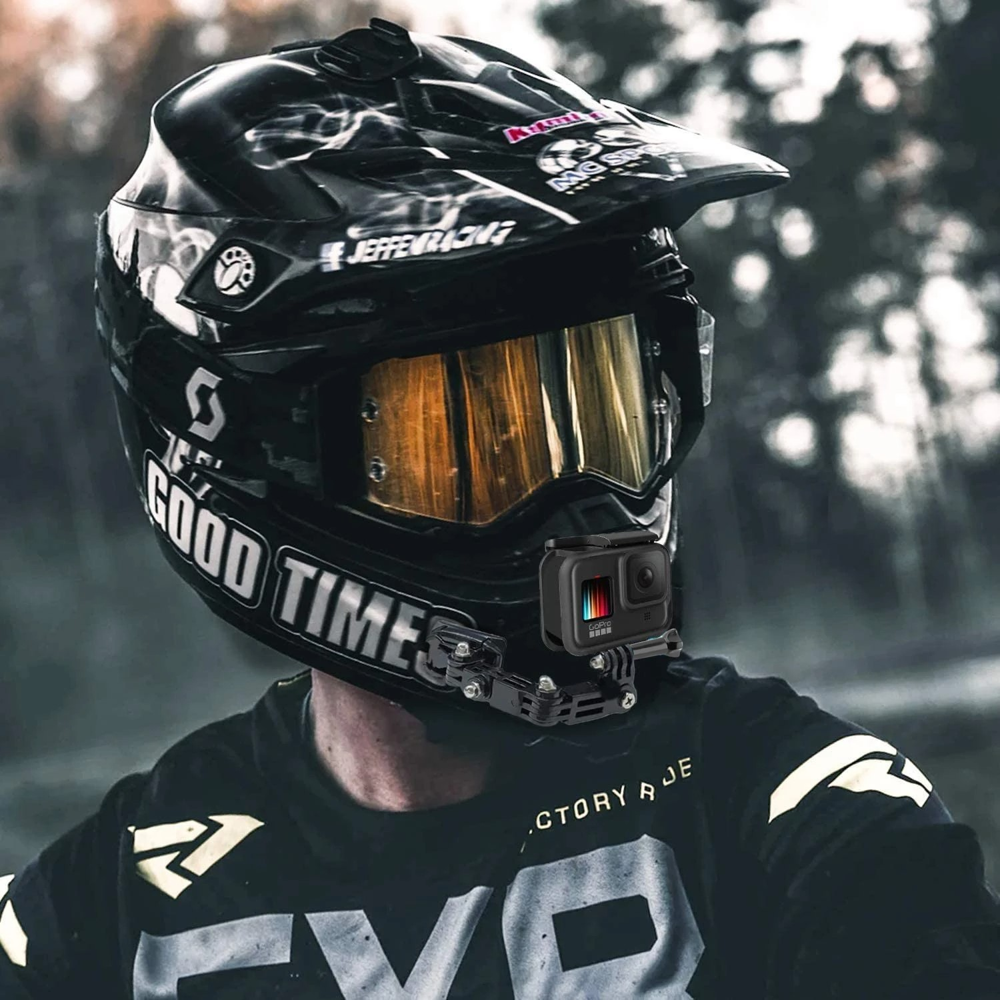
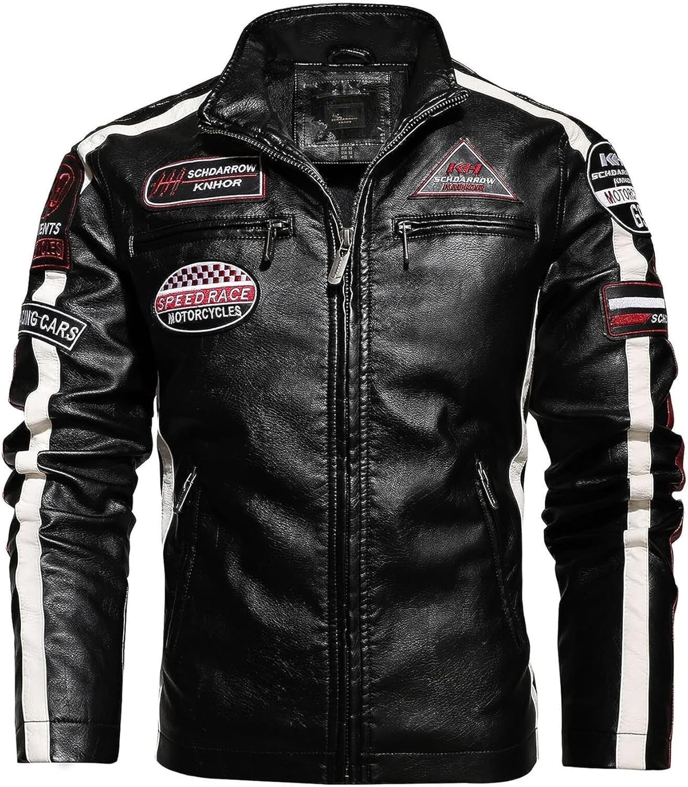
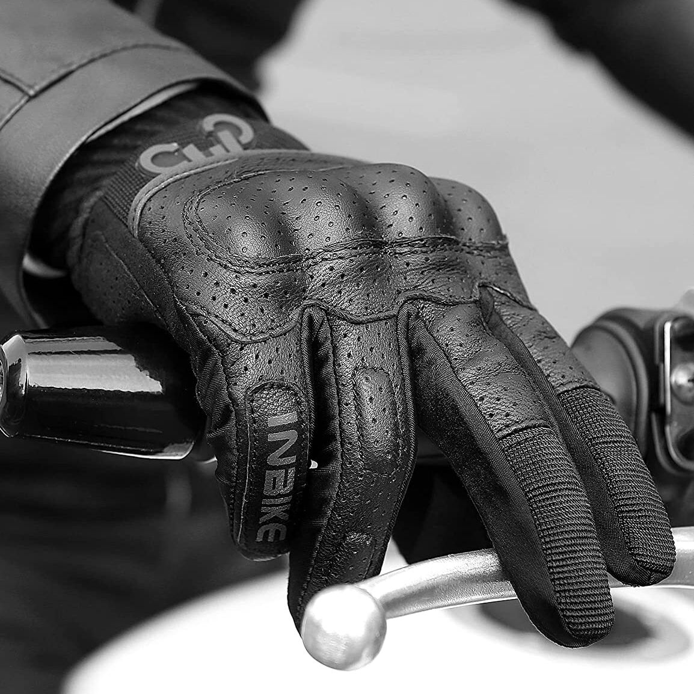

Equipo Básico de Protección

Casco
El elemento más importante para tu seguridad. Debe estar homologado y ajustarse perfectamente. Un casco bien ajustado puede salvar tu vida en caso de accidente.

Chaqueta Protectora
Con protecciones en hombros, codos y espalda. Preferiblemente de materiales resistentes a la abrasión como cuero o textiles técnicos de alta calidad.

Guantes
Protegen tus manos y mejoran el agarre del manillar. Busca guantes con protecciones en nudillos y palma, y que sean adecuados para la temporada.